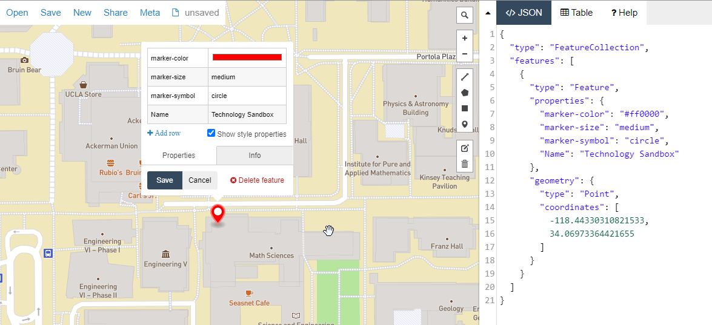
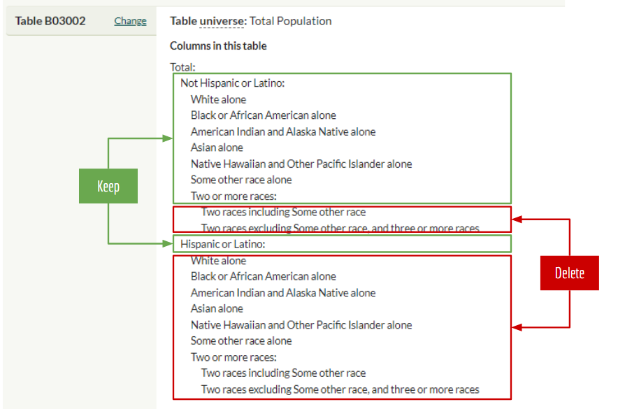

Introduction to GIS
Contents
Table of Contents
- 1 Take notice!
- 2 Introduction to GIS
- 3 Python and census data
- 3.1 Where to get census data?
- 3.2 The libraries
- 3.3 Importing data
- 3.4 Preliminary inspection
- 3.5 Data types
- 3.6 Delete county row
- 3.7 The census data dictionary
- 3.8 Dropping columns
- 3.9 Renaming columns
- 3.10 Double check your data integrity
- 3.11 Simple stats and plots
- 3.12 Create your first plot
- 3.13 Sorting
- 3.14 Filtering and subsetting data
- 3.15 Totals are great but let's normalize the data
- 4 Maps!
- 5 Advanced topics
Take notice!
- This class will be recorded
Introduction to GIS#
Special thanks to Albert Kochaphum for sharing some of his material for this workshop.
What is GIS? Depending on who you ask, GIS has two meanings:
Geographic Information System typically refers to applications and software that is used to create spatial data and to investigate spatial relationships between that data.
Geographic Information Science is the framework we use to ask questions about the spatial relationship between data.
For example, predicting the effects of climate change (rising sea-levels) on low laying areas (elevation) would be an application of Geographic Information Science, while the software to do the predictions would be an example of a Geographic Information System.
In short:

Data Types#
There are two key distinction between data types, spatial or non-spatial data.
Spatial data is data that already contains geographic information.
Common file types are the following:
Shapefiles:
.zip(these are made up of 3 or more files, and the .shp is commonly used to identify them)KML files:
.kml,.kmzGeoJSON files:
.geojsonImage files:
.jpg,.png,.tiff
Non-spatial data is data that has no geographic information.
Common non-spatial data are the following:
Excel Spreadsheets:
.xlsx,.xlsComma/Table Separated Value files:
.csvJSON files:
.jsondBase database file:
.dbf
When non-spatial data has geographic attributes, like zipcodes, addresses, city names, or even latitude/longitude coordinates it can be turned into spatial data. The distinction is that non-spatial data will only show up as tables in GIS applications.
On the other hand, spatial data that has data attributes can be turned into a non-spatial data type by saving/exporting its data as tables. The following graphic summarizes this relationship:

Spatial Data Formats#
There are several data spatial data models that you may encounter as you work with geo data. Geodata formats are commonly divided into two types, vector data or a raster data. In GIS, discrete data means that the data has a fixed location. Continuous data in GIS does not have well defined or no boundary at all, the most common example is elevation. The graphic below shows how vector data and raster data formats can represent continuous or discrete data:

Spatial Data Types (Source: Michele Tobias, UC Davis)
The graphic also illustrates how certain vector data is often better suited for discrete data, while raster data is often better used for continuous data. Let’s go into a little more detail about each!
Vector Data#
Vector data represents discrete objects in the real world with points, lines, and polygons in the dataset.
If you were to draw a map to your house for a friend, you would typically use vector data - roads would be lines, a shopping center included as an important landmark might be a rectangle of sorts, and your house might be a point (perhaps represented by a star or a house icon).
Raster Data#
Raster data represents continuous fields or discrete objects on a grid, storing measurements or category names in each cell of the grid.
Digital photos are raster data you are already familiar with. If you zoom in far enough on a digital photo, you’ll see that photo is made up of pixels, which appear as colored squares. Pixels are cells in a regular grid and each contains the digital code that corresponds to the color that should be displayed there.
You may be surprised to see jpgs listed as a data type that you may have thought to be non-spatial, but satellite imagery is commonly stored in photo formats.
Introduction to GIS for the Social Sciences#
Now that we have a good understanding of geospatial data, we can explore the GIS connection to the social sciences.
Geography is divided into physical geography (natural systems) and human geography (human-made systems). The social sciences sit within human-made systems and the data here is often captured in specific units. Such as number of people living in a specific city or the language spoken in a country. Most of the data we will encounter will be discrete.
The following election result map shows the number of people from each state that voted for either Biden or Trump in the 2020 general election.

Source: New York Times, 2020
The states themselves are the boundaries, even though the data is collected at smaller levels.
How is that possible?
Geographic Hierarchy#
Move over Aristotle: The sum is the whole of its parts!
The first law of Geography (and perhaps only) is “everything is related to everything else, but nearer things are more related than distant things.” When thinking about human data, there are many different units, countries, states, cities, and even households. Whenever this data is being summarized to larger geographies, as long as the smaller boundaries do not overlap then you can do so. However, this does not mean it is always safe to do so, why?
Keeping the first law of geography in mind, when you summarize smaller data to larger geographies (i.e. going from cities to a state), the nearer things become less related because they are summarized to a larger geographic relation. Let’s return to the election map, but break it down into counties to see how the summing of the data changed spatial relationships.

Source: USA Today, 2020
How does this map compare to the previous map?
For one thing, you can see that a state like Nevada is not completely blue and has quite a bit of Republican voters. When a whole state is considered “democrat” or blue, such types of simplifications can only occur when data from the counties is summarized upwards to the state level.
Below is an example of how the United States Census Bureau’s uses hierarchal geography:

Python and census data#
Overview for this workshop:
how and where to find and download census data
use
geopandaslibrary to read a geojson file (documentation)use
contextilyto add basemaps (documentation)renaming columns
normalizing data columns
simple stats
adding basemaps
Where to get census data?#
Well, you have many options, including, getting it directly from the source, the census bureau website itself. We also have, as part of the academic community, a great resource: Social Explorer. With a campus-wide license to have full access to their website, you can download any census variable, that pretty much existed… ever. And, with its easy-to-use user interface, this is a wonderful one-stop shop for your census needs.
But for data scientists, I recommend another source: censusreporter.org

The libraries#
# to read and visualize spatial data
import geopandas as gpd
# to provide basemaps
import contextily as ctx
# to give more power to your figures (plots)
import matplotlib.pyplot as plt
Importing data#
In order to work with data in python, we need a library that will let us handle “spatial data exploration.” We looked at shapefiles with geopandas last week, and for this lab, we will use it to read and wrangle a geojson file.
Before we continue, let’s make a brief detour and find out how geojson files are constructed:

We make the call to load and read the data that was downloaded from census reporter. Take note at the relative path reference to find the file in your file directory.
# load a data file
# note the relative filepath! where is this file located?
gdf = gpd.read_file('data/acs2019_5yr_B03002_14000US06037534001.geojson')
Preliminary inspection#
A quick look at the size of the data.
# get number of rows, columns
gdf.shape
(2347, 45)
# get first 5 rows
gdf.head()
| geoid | name | B03002001 | B03002001, Error | B03002002 | B03002002, Error | B03002003 | B03002003, Error | B03002004 | B03002004, Error | ... | B03002017, Error | B03002018 | B03002018, Error | B03002019 | B03002019, Error | B03002020 | B03002020, Error | B03002021 | B03002021, Error | geometry | |
|---|---|---|---|---|---|---|---|---|---|---|---|---|---|---|---|---|---|---|---|---|---|
| 0 | 05000US06037 | Los Angeles County, CA | 10081570.0 | 0.0 | 5193136.0 | 0.0 | 2641770.0 | 1343.0 | 790252.0 | 2958.0 | ... | 567.0 | 2083135.0 | 21995.0 | 174263.0 | 4915.0 | 103325.0 | 3658.0 | 70938.0 | 2605.0 | MULTIPOLYGON (((-118.70339 34.16859, -118.7033... |
| 1 | 14000US06037101110 | Census Tract 1011.10, Los Angeles, CA | 4283.0 | 443.0 | 3095.0 | 354.0 | 2616.0 | 306.0 | 19.0 | 15.0 | ... | 12.0 | 383.0 | 311.0 | 74.0 | 52.0 | 34.0 | 28.0 | 40.0 | 46.0 | MULTIPOLYGON (((-118.30229 34.25870, -118.3009... |
| 2 | 14000US06037101122 | Census Tract 1011.22, Los Angeles, CA | 3405.0 | 334.0 | 3258.0 | 344.0 | 2882.0 | 358.0 | 74.0 | 102.0 | ... | 12.0 | 48.0 | 55.0 | 0.0 | 12.0 | 0.0 | 12.0 | 0.0 | 12.0 | MULTIPOLYGON (((-118.30334 34.27371, -118.3033... |
| 3 | 14000US06037101210 | Census Tract 1012.10, Los Angeles, CA | 6347.0 | 484.0 | 3731.0 | 465.0 | 2986.0 | 435.0 | 198.0 | 165.0 | ... | 17.0 | 874.0 | 477.0 | 81.0 | 80.0 | 48.0 | 62.0 | 33.0 | 51.0 | MULTIPOLYGON (((-118.29945 34.25598, -118.2979... |
| 4 | 14000US06037101220 | Census Tract 1012.20, Los Angeles, CA | 3702.0 | 276.0 | 2338.0 | 236.0 | 1812.0 | 271.0 | 87.0 | 107.0 | ... | 12.0 | 497.0 | 231.0 | 45.0 | 42.0 | 11.0 | 18.0 | 34.0 | 39.0 | MULTIPOLYGON (((-118.28593 34.25227, -118.2859... |
5 rows × 45 columns
# get a random row
gdf.sample()
| geoid | name | B03002001 | B03002001, Error | B03002002 | B03002002, Error | B03002003 | B03002003, Error | B03002004 | B03002004, Error | ... | B03002017, Error | B03002018 | B03002018, Error | B03002019 | B03002019, Error | B03002020 | B03002020, Error | B03002021 | B03002021, Error | geometry | |
|---|---|---|---|---|---|---|---|---|---|---|---|---|---|---|---|---|---|---|---|---|---|
| 1764 | 14000US06037553100 | Census Tract 5531, Los Angeles, CA | 6770.0 | 513.0 | 3602.0 | 308.0 | 1179.0 | 216.0 | 880.0 | 227.0 | ... | 17.0 | 1780.0 | 471.0 | 169.0 | 109.0 | 136.0 | 92.0 | 33.0 | 50.0 | MULTIPOLYGON (((-118.11742 33.89305, -118.1174... |
1 rows × 45 columns
# plot it!
gdf.plot(figsize=(10,10))
<AxesSubplot:>
# plot a random row
gdf.sample().plot()
<AxesSubplot:>
Data types#
To get the data types, we will use .info().
# look at columns, null values, and the data types
gdf.info()
<class 'geopandas.geodataframe.GeoDataFrame'>
RangeIndex: 2347 entries, 0 to 2346
Data columns (total 45 columns):
# Column Non-Null Count Dtype
--- ------ -------------- -----
0 geoid 2347 non-null object
1 name 2347 non-null object
2 B03002001 2347 non-null float64
3 B03002001, Error 2347 non-null float64
4 B03002002 2347 non-null float64
5 B03002002, Error 2347 non-null float64
6 B03002003 2347 non-null float64
7 B03002003, Error 2347 non-null float64
8 B03002004 2347 non-null float64
9 B03002004, Error 2347 non-null float64
10 B03002005 2347 non-null float64
11 B03002005, Error 2347 non-null float64
12 B03002006 2347 non-null float64
13 B03002006, Error 2347 non-null float64
14 B03002007 2347 non-null float64
15 B03002007, Error 2347 non-null float64
16 B03002008 2347 non-null float64
17 B03002008, Error 2347 non-null float64
18 B03002009 2347 non-null float64
19 B03002009, Error 2347 non-null float64
20 B03002010 2347 non-null float64
21 B03002010, Error 2347 non-null float64
22 B03002011 2347 non-null float64
23 B03002011, Error 2347 non-null float64
24 B03002012 2347 non-null float64
25 B03002012, Error 2347 non-null float64
26 B03002013 2347 non-null float64
27 B03002013, Error 2347 non-null float64
28 B03002014 2347 non-null float64
29 B03002014, Error 2347 non-null float64
30 B03002015 2347 non-null float64
31 B03002015, Error 2347 non-null float64
32 B03002016 2347 non-null float64
33 B03002016, Error 2347 non-null float64
34 B03002017 2347 non-null float64
35 B03002017, Error 2347 non-null float64
36 B03002018 2347 non-null float64
37 B03002018, Error 2347 non-null float64
38 B03002019 2347 non-null float64
39 B03002019, Error 2347 non-null float64
40 B03002020 2347 non-null float64
41 B03002020, Error 2347 non-null float64
42 B03002021 2347 non-null float64
43 B03002021, Error 2347 non-null float64
44 geometry 2347 non-null geometry
dtypes: float64(42), geometry(1), object(2)
memory usage: 825.2+ KB
The FIPS code#
What is the geoid? It is called a FIPS code but why is it important?

# get first five geoid's
gdf.geoid.head()
0 05000US06037
1 14000US06037101110
2 14000US06037101122
3 14000US06037101210
4 14000US06037101220
Name: geoid, dtype: object

Delete county row#
As we have observed, the first row in the data obtained from censusreporter is for the entire county. Keeping this row is problematic, as it represents a data record that is at a different scale. Let’s delete it.
Note that any data downloaded from censusreporter will have a "summary row" for the entire data.
# check the data again
gdf.head()
| geoid | name | B03002001 | B03002001, Error | B03002002 | B03002002, Error | B03002003 | B03002003, Error | B03002004 | B03002004, Error | ... | B03002017, Error | B03002018 | B03002018, Error | B03002019 | B03002019, Error | B03002020 | B03002020, Error | B03002021 | B03002021, Error | geometry | |
|---|---|---|---|---|---|---|---|---|---|---|---|---|---|---|---|---|---|---|---|---|---|
| 0 | 05000US06037 | Los Angeles County, CA | 10081570.0 | 0.0 | 5193136.0 | 0.0 | 2641770.0 | 1343.0 | 790252.0 | 2958.0 | ... | 567.0 | 2083135.0 | 21995.0 | 174263.0 | 4915.0 | 103325.0 | 3658.0 | 70938.0 | 2605.0 | MULTIPOLYGON (((-118.70339 34.16859, -118.7033... |
| 1 | 14000US06037101110 | Census Tract 1011.10, Los Angeles, CA | 4283.0 | 443.0 | 3095.0 | 354.0 | 2616.0 | 306.0 | 19.0 | 15.0 | ... | 12.0 | 383.0 | 311.0 | 74.0 | 52.0 | 34.0 | 28.0 | 40.0 | 46.0 | MULTIPOLYGON (((-118.30229 34.25870, -118.3009... |
| 2 | 14000US06037101122 | Census Tract 1011.22, Los Angeles, CA | 3405.0 | 334.0 | 3258.0 | 344.0 | 2882.0 | 358.0 | 74.0 | 102.0 | ... | 12.0 | 48.0 | 55.0 | 0.0 | 12.0 | 0.0 | 12.0 | 0.0 | 12.0 | MULTIPOLYGON (((-118.30334 34.27371, -118.3033... |
| 3 | 14000US06037101210 | Census Tract 1012.10, Los Angeles, CA | 6347.0 | 484.0 | 3731.0 | 465.0 | 2986.0 | 435.0 | 198.0 | 165.0 | ... | 17.0 | 874.0 | 477.0 | 81.0 | 80.0 | 48.0 | 62.0 | 33.0 | 51.0 | MULTIPOLYGON (((-118.29945 34.25598, -118.2979... |
| 4 | 14000US06037101220 | Census Tract 1012.20, Los Angeles, CA | 3702.0 | 276.0 | 2338.0 | 236.0 | 1812.0 | 271.0 | 87.0 | 107.0 | ... | 12.0 | 497.0 | 231.0 | 45.0 | 42.0 | 11.0 | 18.0 | 34.0 | 39.0 | MULTIPOLYGON (((-118.28593 34.25227, -118.2859... |
5 rows × 45 columns
# drop the row with index 0 (i.e. the first row)
gdf = gdf.drop([0])
# check to see if it has been deleted
gdf.head()
| geoid | name | B03002001 | B03002001, Error | B03002002 | B03002002, Error | B03002003 | B03002003, Error | B03002004 | B03002004, Error | ... | B03002017, Error | B03002018 | B03002018, Error | B03002019 | B03002019, Error | B03002020 | B03002020, Error | B03002021 | B03002021, Error | geometry | |
|---|---|---|---|---|---|---|---|---|---|---|---|---|---|---|---|---|---|---|---|---|---|
| 1 | 14000US06037101110 | Census Tract 1011.10, Los Angeles, CA | 4283.0 | 443.0 | 3095.0 | 354.0 | 2616.0 | 306.0 | 19.0 | 15.0 | ... | 12.0 | 383.0 | 311.0 | 74.0 | 52.0 | 34.0 | 28.0 | 40.0 | 46.0 | MULTIPOLYGON (((-118.30229 34.25870, -118.3009... |
| 2 | 14000US06037101122 | Census Tract 1011.22, Los Angeles, CA | 3405.0 | 334.0 | 3258.0 | 344.0 | 2882.0 | 358.0 | 74.0 | 102.0 | ... | 12.0 | 48.0 | 55.0 | 0.0 | 12.0 | 0.0 | 12.0 | 0.0 | 12.0 | MULTIPOLYGON (((-118.30334 34.27371, -118.3033... |
| 3 | 14000US06037101210 | Census Tract 1012.10, Los Angeles, CA | 6347.0 | 484.0 | 3731.0 | 465.0 | 2986.0 | 435.0 | 198.0 | 165.0 | ... | 17.0 | 874.0 | 477.0 | 81.0 | 80.0 | 48.0 | 62.0 | 33.0 | 51.0 | MULTIPOLYGON (((-118.29945 34.25598, -118.2979... |
| 4 | 14000US06037101220 | Census Tract 1012.20, Los Angeles, CA | 3702.0 | 276.0 | 2338.0 | 236.0 | 1812.0 | 271.0 | 87.0 | 107.0 | ... | 12.0 | 497.0 | 231.0 | 45.0 | 42.0 | 11.0 | 18.0 | 34.0 | 39.0 | MULTIPOLYGON (((-118.28593 34.25227, -118.2859... |
| 5 | 14000US06037101300 | Census Tract 1013, Los Angeles, CA | 3884.0 | 394.0 | 3587.0 | 363.0 | 3126.0 | 359.0 | 205.0 | 232.0 | ... | 12.0 | 45.0 | 38.0 | 28.0 | 32.0 | 28.0 | 32.0 | 0.0 | 12.0 | MULTIPOLYGON (((-118.27822 34.25068, -118.2782... |
5 rows × 45 columns
The census data dictionary#
There are a lot of columns. What are these columns? Column headers are defined in the metadata.json file that comes in the dowloaded zipfile from censusreporter. Click the link below to open the json file in another tab.
metadata.json
Let’s identify which columns are needed, and which are not for our exploration.

Dropping columns#
There are many columns that we do not need.
output existing columns as a list
create a list of columns to keep
redefine
gdfwith only the columns to keep
list(gdf) # this is the same as df.columns.to_list()
['geoid',
'name',
'B03002001',
'B03002001, Error',
'B03002002',
'B03002002, Error',
'B03002003',
'B03002003, Error',
'B03002004',
'B03002004, Error',
'B03002005',
'B03002005, Error',
'B03002006',
'B03002006, Error',
'B03002007',
'B03002007, Error',
'B03002008',
'B03002008, Error',
'B03002009',
'B03002009, Error',
'B03002010',
'B03002010, Error',
'B03002011',
'B03002011, Error',
'B03002012',
'B03002012, Error',
'B03002013',
'B03002013, Error',
'B03002014',
'B03002014, Error',
'B03002015',
'B03002015, Error',
'B03002016',
'B03002016, Error',
'B03002017',
'B03002017, Error',
'B03002018',
'B03002018, Error',
'B03002019',
'B03002019, Error',
'B03002020',
'B03002020, Error',
'B03002021',
'B03002021, Error',
'geometry']
# create a list of columns to keep
columns_to_keep = ['geoid',
'name',
'B03002001',
'B03002002',
'B03002003',
'B03002004',
'B03002005',
'B03002006',
'B03002007',
'B03002008',
'B03002009',
'B03002012',
'geometry']
# redefine gdf with only columns to keep
gdf = gdf[columns_to_keep]
# check the slimmed down gdf
gdf.head()
| geoid | name | B03002001 | B03002002 | B03002003 | B03002004 | B03002005 | B03002006 | B03002007 | B03002008 | B03002009 | B03002012 | geometry | |
|---|---|---|---|---|---|---|---|---|---|---|---|---|---|
| 1 | 14000US06037101110 | Census Tract 1011.10, Los Angeles, CA | 4283.0 | 3095.0 | 2616.0 | 19.0 | 3.0 | 331.0 | 3.0 | 8.0 | 115.0 | 1188.0 | MULTIPOLYGON (((-118.30229 34.25870, -118.3009... |
| 2 | 14000US06037101122 | Census Tract 1011.22, Los Angeles, CA | 3405.0 | 3258.0 | 2882.0 | 74.0 | 15.0 | 220.0 | 0.0 | 0.0 | 67.0 | 147.0 | MULTIPOLYGON (((-118.30334 34.27371, -118.3033... |
| 3 | 14000US06037101210 | Census Tract 1012.10, Los Angeles, CA | 6347.0 | 3731.0 | 2986.0 | 198.0 | 0.0 | 486.0 | 0.0 | 47.0 | 14.0 | 2616.0 | MULTIPOLYGON (((-118.29945 34.25598, -118.2979... |
| 4 | 14000US06037101220 | Census Tract 1012.20, Los Angeles, CA | 3702.0 | 2338.0 | 1812.0 | 87.0 | 0.0 | 341.0 | 0.0 | 0.0 | 98.0 | 1364.0 | MULTIPOLYGON (((-118.28593 34.25227, -118.2859... |
| 5 | 14000US06037101300 | Census Tract 1013, Los Angeles, CA | 3884.0 | 3587.0 | 3126.0 | 205.0 | 0.0 | 194.0 | 0.0 | 0.0 | 62.0 | 297.0 | MULTIPOLYGON (((-118.27822 34.25068, -118.2782... |
Renaming columns#
Let’s rename the columns. First, create a list of column names as they are now.
list(gdf) # this is the same as df.columns.to_list()
['geoid',
'name',
'B03002001',
'B03002002',
'B03002003',
'B03002004',
'B03002005',
'B03002006',
'B03002007',
'B03002008',
'B03002009',
'B03002012',
'geometry']
Then, simply copy and paste the output list above, and define the columns with it. Replace the values with your desired column names
gdf.columns = ['geoid',
'name',
'Total',
'Non Hispanic',
'Non Hispanic White',
'Non Hispanic Black',
'Non Hispanic American Indian and Alaska Native',
'Non Hispanic Asian',
'Non Hispanic Native Hawaiian and Other Pacific Islander',
'Non Hispanic Some other race',
'Non Hispanic Two or more races',
'Hispanic',
'geometry']
# check the renamed columns
gdf.head()
| geoid | name | Total | Non Hispanic | Non Hispanic White | Non Hispanic Black | Non Hispanic American Indian and Alaska Native | Non Hispanic Asian | Non Hispanic Native Hawaiian and Other Pacific Islander | Non Hispanic Some other race | Non Hispanic Two or more races | Hispanic | geometry | |
|---|---|---|---|---|---|---|---|---|---|---|---|---|---|
| 1 | 14000US06037101110 | Census Tract 1011.10, Los Angeles, CA | 4283.0 | 3095.0 | 2616.0 | 19.0 | 3.0 | 331.0 | 3.0 | 8.0 | 115.0 | 1188.0 | MULTIPOLYGON (((-118.30229 34.25870, -118.3009... |
| 2 | 14000US06037101122 | Census Tract 1011.22, Los Angeles, CA | 3405.0 | 3258.0 | 2882.0 | 74.0 | 15.0 | 220.0 | 0.0 | 0.0 | 67.0 | 147.0 | MULTIPOLYGON (((-118.30334 34.27371, -118.3033... |
| 3 | 14000US06037101210 | Census Tract 1012.10, Los Angeles, CA | 6347.0 | 3731.0 | 2986.0 | 198.0 | 0.0 | 486.0 | 0.0 | 47.0 | 14.0 | 2616.0 | MULTIPOLYGON (((-118.29945 34.25598, -118.2979... |
| 4 | 14000US06037101220 | Census Tract 1012.20, Los Angeles, CA | 3702.0 | 2338.0 | 1812.0 | 87.0 | 0.0 | 341.0 | 0.0 | 0.0 | 98.0 | 1364.0 | MULTIPOLYGON (((-118.28593 34.25227, -118.2859... |
| 5 | 14000US06037101300 | Census Tract 1013, Los Angeles, CA | 3884.0 | 3587.0 | 3126.0 | 205.0 | 0.0 | 194.0 | 0.0 | 0.0 | 62.0 | 297.0 | MULTIPOLYGON (((-118.27822 34.25068, -118.2782... |
Double check your data integrity#
Does the math add up? Let’s check. The Total should equal the rest of the columns.
# get a random record
random_tract = gdf.sample()
random_tract
| geoid | name | Total | Non Hispanic | Non Hispanic White | Non Hispanic Black | Non Hispanic American Indian and Alaska Native | Non Hispanic Asian | Non Hispanic Native Hawaiian and Other Pacific Islander | Non Hispanic Some other race | Non Hispanic Two or more races | Hispanic | geometry | |
|---|---|---|---|---|---|---|---|---|---|---|---|---|---|
| 1696 | 14000US06037542800 | Census Tract 5428, Los Angeles, CA | 2980.0 | 1402.0 | 77.0 | 1272.0 | 0.0 | 0.0 | 0.0 | 0.0 | 53.0 | 1578.0 | MULTIPOLYGON (((-118.25353 33.90275, -118.2534... |
To get values from individual cells in a dataframe, use the iloc command.
iloc(documentation)
While there are various methods to get cell values in python, the iloc command allows you to get to a cell based on the position of the record row and the column name.
# example usage of iloc to get the total population of our random record
# "for the 0th record, get the value in the Total column"
random_tract.iloc[0]['Total']
2980.0
# print this out in plain english
print('Total population: ' + str(random_tract.iloc[0]['Total']))
Total population: 2980.0
# non hispanic plus hispanic should equal to the total
print('Non Hispanic + Hispanic: ' + str(random_tract.iloc[0]['Non Hispanic'] + random_tract.iloc[0]['Hispanic']))
Non Hispanic + Hispanic: 2980.0
# hispanic plus all the non hispanice categories
print(random_tract.iloc[0]['Non Hispanic White'] +
random_tract.iloc[0]['Non Hispanic Black'] +
random_tract.iloc[0]['Non Hispanic American Indian and Alaska Native'] +
random_tract.iloc[0]['Non Hispanic Asian'] +
random_tract.iloc[0]['Non Hispanic Native Hawaiian and Other Pacific Islander'] +
random_tract.iloc[0]['Non Hispanic Some other race'] +
random_tract.iloc[0]['Non Hispanic Two or more races'] +
random_tract.iloc[0]['Hispanic'])
2980.0
Simple stats and plots#
# access a single column like df['col_name']
gdf['Total'].head()
1 4283.0
2 3405.0
3 6347.0
4 3702.0
5 3884.0
Name: Total, dtype: float64
# What is the mean?
gdf['Total'].mean()
4297.34441602728
# What is the median?
gdf['Total'].median()
4211.5
# get some stats
gdf['Total'].describe()
count 2346.000000
mean 4297.344416
std 1587.065962
min 0.000000
25% 3203.750000
50% 4211.500000
75% 5314.000000
max 12463.000000
Name: Total, dtype: float64
Create your first plot#
# plot it as a historgram with 50 bins
gdf['Total'].plot.hist()
<AxesSubplot:ylabel='Frequency'>
# make it bigger, increase the number of bins, and give it a title
gdf['Total'].plot.hist(figsize=(12,5),
bins=100,
title='Los Angeles County census tracts by population size (ACS 2019 5-year)')
<AxesSubplot:title={'center':'Los Angeles County census tracts by population size (ACS 2019 5-year)'}, ylabel='Frequency'>
Sorting#
What are the top 10 most populated census tracts? What are the census tracts with the highest black popluation? To answer these questions, the simplest method is to sort the data by their respective columns.
gdf_sorted = gdf.sort_values(by='Total',ascending = False)
# display the data, but just a few columns to keep it clean
gdf_sorted[['geoid','Total']].head(10)
| geoid | Total | |
|---|---|---|
| 2198 | 14000US06037901004 | 12463.0 |
| 923 | 14000US06037275602 | 12100.0 |
| 848 | 14000US06037265301 | 11977.0 |
| 2236 | 14000US06037910705 | 11613.0 |
| 2206 | 14000US06037901205 | 10783.0 |
| 2275 | 14000US06037920037 | 10318.0 |
| 2147 | 14000US06037702901 | 9852.0 |
| 994 | 14000US06037300600 | 9609.0 |
| 532 | 14000US06037206020 | 8947.0 |
| 2192 | 14000US06037900803 | 8751.0 |
# plot the top 10 most populated tracts
gdf_sorted.head(10).plot(figsize=(10,10))
<AxesSubplot:>
# Make it 100 and prettier
gdf_sorted.head(1000).plot(figsize=(10,10),
column='Total',
cmap='plasma',
legend=True)
<AxesSubplot:>
Filtering and subsetting data#
Sorting is one method, but the process of discovery compels us to interrogate the data in different ways. One method of doing so is to query, or filter the data to see specific views of the data based on a question you may have. For example, what are the census tract that have no people in them? Or, Which census tracts are more than 75% black?
# subset the data so that we can see the data per row...
# in other words, this syntax is asking to "show me the values in my dataframe that match this filter
gdf[gdf['Total']==0]
| geoid | name | Total | Non Hispanic | Non Hispanic White | Non Hispanic Black | Non Hispanic American Indian and Alaska Native | Non Hispanic Asian | Non Hispanic Native Hawaiian and Other Pacific Islander | Non Hispanic Some other race | Non Hispanic Two or more races | Hispanic | geometry | |
|---|---|---|---|---|---|---|---|---|---|---|---|---|---|
| 1055 | 14000US06037320000 | Census Tract 3200, Los Angeles, CA | 0.0 | 0.0 | 0.0 | 0.0 | 0.0 | 0.0 | 0.0 | 0.0 | 0.0 | 0.0 | MULTIPOLYGON (((-118.36215 34.13903, -118.3612... |
| 2318 | 14000US06037980001 | Census Tract 9800.01, Los Angeles, CA | 0.0 | 0.0 | 0.0 | 0.0 | 0.0 | 0.0 | 0.0 | 0.0 | 0.0 | 0.0 | MULTIPOLYGON (((-118.37031 34.20120, -118.3658... |
| 2319 | 14000US06037980002 | Census Tract 9800.02, Los Angeles, CA | 0.0 | 0.0 | 0.0 | 0.0 | 0.0 | 0.0 | 0.0 | 0.0 | 0.0 | 0.0 | MULTIPOLYGON (((-118.25753 33.80197, -118.2571... |
| 2320 | 14000US06037980003 | Census Tract 9800.03, Los Angeles, CA | 0.0 | 0.0 | 0.0 | 0.0 | 0.0 | 0.0 | 0.0 | 0.0 | 0.0 | 0.0 | MULTIPOLYGON (((-118.14019 34.78468, -118.1401... |
| 2321 | 14000US06037980004 | Census Tract 9800.04, Los Angeles, CA | 0.0 | 0.0 | 0.0 | 0.0 | 0.0 | 0.0 | 0.0 | 0.0 | 0.0 | 0.0 | MULTIPOLYGON (((-118.12795 34.64591, -118.1274... |
| 2322 | 14000US06037980005 | Census Tract 9800.05, Los Angeles, CA | 0.0 | 0.0 | 0.0 | 0.0 | 0.0 | 0.0 | 0.0 | 0.0 | 0.0 | 0.0 | MULTIPOLYGON (((-118.35210 33.85818, -118.3517... |
| 2323 | 14000US06037980006 | Census Tract 9800.06, Los Angeles, CA | 0.0 | 0.0 | 0.0 | 0.0 | 0.0 | 0.0 | 0.0 | 0.0 | 0.0 | 0.0 | MULTIPOLYGON (((-118.09420 33.78670, -118.0941... |
| 2324 | 14000US06037980007 | Census Tract 9800.07, Los Angeles, CA | 0.0 | 0.0 | 0.0 | 0.0 | 0.0 | 0.0 | 0.0 | 0.0 | 0.0 | 0.0 | MULTIPOLYGON (((-118.11512 33.76305, -118.1135... |
| 2328 | 14000US06037980013 | Census Tract 9800.13, Los Angeles, CA | 0.0 | 0.0 | 0.0 | 0.0 | 0.0 | 0.0 | 0.0 | 0.0 | 0.0 | 0.0 | MULTIPOLYGON (((-118.39627 33.92804, -118.3962... |
| 2331 | 14000US06037980018 | Census Tract 9800.18, Los Angeles, CA | 0.0 | 0.0 | 0.0 | 0.0 | 0.0 | 0.0 | 0.0 | 0.0 | 0.0 | 0.0 | MULTIPOLYGON (((-118.18066 33.80597, -118.1806... |
| 2333 | 14000US06037980020 | Census Tract 9800.20, Los Angeles, CA | 0.0 | 0.0 | 0.0 | 0.0 | 0.0 | 0.0 | 0.0 | 0.0 | 0.0 | 0.0 | MULTIPOLYGON (((-118.34412 34.21700, -118.3438... |
| 2335 | 14000US06037980022 | Census Tract 9800.22, Los Angeles, CA | 0.0 | 0.0 | 0.0 | 0.0 | 0.0 | 0.0 | 0.0 | 0.0 | 0.0 | 0.0 | MULTIPOLYGON (((-118.50266 34.30809, -118.5026... |
| 2336 | 14000US06037980023 | Census Tract 9800.23, Los Angeles, CA | 0.0 | 0.0 | 0.0 | 0.0 | 0.0 | 0.0 | 0.0 | 0.0 | 0.0 | 0.0 | MULTIPOLYGON (((-118.64870 34.23120, -118.6480... |
| 2338 | 14000US06037980025 | Census Tract 9800.25, Los Angeles, CA | 0.0 | 0.0 | 0.0 | 0.0 | 0.0 | 0.0 | 0.0 | 0.0 | 0.0 | 0.0 | MULTIPOLYGON (((-118.25712 33.83927, -118.2571... |
| 2340 | 14000US06037980028 | Census Tract 9800.28, Los Angeles, CA | 0.0 | 0.0 | 0.0 | 0.0 | 0.0 | 0.0 | 0.0 | 0.0 | 0.0 | 0.0 | MULTIPOLYGON (((-118.45246 33.94315, -118.4464... |
| 2341 | 14000US06037980030 | Census Tract 9800.30, Los Angeles, CA | 0.0 | 0.0 | 0.0 | 0.0 | 0.0 | 0.0 | 0.0 | 0.0 | 0.0 | 0.0 | MULTIPOLYGON (((-118.43712 33.91639, -118.4299... |
| 2344 | 14000US06037990100 | Census Tract 9901, Los Angeles, CA | 0.0 | 0.0 | 0.0 | 0.0 | 0.0 | 0.0 | 0.0 | 0.0 | 0.0 | 0.0 | MULTIPOLYGON (((-118.95114 33.99643, -118.9505... |
| 2345 | 14000US06037990200 | Census Tract 9902, Los Angeles, CA | 0.0 | 0.0 | 0.0 | 0.0 | 0.0 | 0.0 | 0.0 | 0.0 | 0.0 | 0.0 | MULTIPOLYGON (((-118.63598 34.03255, -118.6325... |
| 2346 | 14000US06037990300 | Census Tract 9903, Los Angeles, CA | 0.0 | 0.0 | 0.0 | 0.0 | 0.0 | 0.0 | 0.0 | 0.0 | 0.0 | 0.0 | MULTIPOLYGON (((-118.47656 33.75038, -118.4661... |
Note that unless you specify the resulting output as a new variable, the results are only temporary (in memory). If you want to use the results for subsequent analysis, you need to create a new variable.
# create a new variable for census tracts with zero pop
gdf_no_pop = gdf[gdf['Total']==0]
# how many records?
print('There are ' + str(len(gdf_no_pop)) + ' census tracts with no people in them')
There are 19 census tracts with no people in them
# display it
gdf_no_pop[['geoid','Total']]
| geoid | Total | |
|---|---|---|
| 1055 | 14000US06037320000 | 0.0 |
| 2318 | 14000US06037980001 | 0.0 |
| 2319 | 14000US06037980002 | 0.0 |
| 2320 | 14000US06037980003 | 0.0 |
| 2321 | 14000US06037980004 | 0.0 |
| 2322 | 14000US06037980005 | 0.0 |
| 2323 | 14000US06037980006 | 0.0 |
| 2324 | 14000US06037980007 | 0.0 |
| 2328 | 14000US06037980013 | 0.0 |
| 2331 | 14000US06037980018 | 0.0 |
| 2333 | 14000US06037980020 | 0.0 |
| 2335 | 14000US06037980022 | 0.0 |
| 2336 | 14000US06037980023 | 0.0 |
| 2338 | 14000US06037980025 | 0.0 |
| 2340 | 14000US06037980028 | 0.0 |
| 2341 | 14000US06037980030 | 0.0 |
| 2344 | 14000US06037990100 | 0.0 |
| 2345 | 14000US06037990200 | 0.0 |
| 2346 | 14000US06037990300 | 0.0 |
Totals are great but let’s normalize the data#
For almost any data inquiry, you should ask the question: should I normalize the data? With raw numbers, is it fair to compare one census tract to another? For example, if one census tract has 1000 hispanics, and another has 100, can we assume that the first tract is largely Hispanic? No, because the total population might be 10000 people, resulting in it being 10% hispanic, whereas the second tract might have 200 people living in it, resulting in it being 50% hispanic.
To avoid these types of misrepresentations, we can normalize the data, and provide it as a percent of total.
# output columns
list(gdf)
['geoid',
'name',
'Total',
'Non Hispanic',
'Non Hispanic White',
'Non Hispanic Black',
'Non Hispanic American Indian and Alaska Native',
'Non Hispanic Asian',
'Non Hispanic Native Hawaiian and Other Pacific Islander',
'Non Hispanic Some other race',
'Non Hispanic Two or more races',
'Hispanic',
'geometry']
# create a new column, and populate it with normalized data to get the percent of total value
gdf['Percent Non Hispanic'] = gdf['Non Hispanic']/gdf['Total']*100
gdf['Percent Hispanic'] = gdf['Hispanic']/gdf['Total']*100
gdf['Percent Non Hispanic White'] = gdf['Non Hispanic White']/gdf['Total']*100
gdf['Percent Non Hispanic Black'] = gdf['Non Hispanic Black']/gdf['Total']*100
gdf['Percent Non Hispanic American Indian and Alaska Native'] = gdf['Non Hispanic American Indian and Alaska Native']/gdf['Total']*100
gdf['Percent Non Hispanic Asian'] = gdf['Non Hispanic Asian']/gdf['Total']*100
gdf['Percent Non Hispanic Native Hawaiian and Other Pacific Islander'] = gdf['Non Hispanic Native Hawaiian and Other Pacific Islander']/gdf['Total']*100
gdf['Percent Non Hispanic Some other race'] = gdf['Non Hispanic Some other race']/gdf['Total']*100
gdf['Percent Non Hispanic Two or more races'] = gdf['Non Hispanic Two or more races']/gdf['Total']*100
# check your work
gdf.sample(5)
| geoid | name | Total | Non Hispanic | Non Hispanic White | Non Hispanic Black | Non Hispanic American Indian and Alaska Native | Non Hispanic Asian | Non Hispanic Native Hawaiian and Other Pacific Islander | Non Hispanic Some other race | ... | geometry | Percent Non Hispanic | Percent Hispanic | Percent Non Hispanic White | Percent Non Hispanic Black | Percent Non Hispanic American Indian and Alaska Native | Percent Non Hispanic Asian | Percent Non Hispanic Native Hawaiian and Other Pacific Islander | Percent Non Hispanic Some other race | Percent Non Hispanic Two or more races | |
|---|---|---|---|---|---|---|---|---|---|---|---|---|---|---|---|---|---|---|---|---|---|
| 116 | 14000US06037117201 | Census Tract 1172.01, Los Angeles, CA | 5191.0 | 1693.0 | 456.0 | 290.0 | 0.0 | 673.0 | 0.0 | 121.0 | ... | MULTIPOLYGON (((-118.47290 34.23904, -118.4729... | 32.614140 | 67.385860 | 8.784435 | 5.586592 | 0.000000 | 12.964747 | 0.00000 | 2.330957 | 2.947409 |
| 1743 | 14000US06037551401 | Census Tract 5514.01, Los Angeles, CA | 4582.0 | 955.0 | 456.0 | 192.0 | 25.0 | 282.0 | 0.0 | 0.0 | ... | MULTIPOLYGON (((-118.16227 33.94225, -118.1621... | 20.842427 | 79.157573 | 9.951986 | 4.190310 | 0.545613 | 6.154518 | 0.00000 | 0.000000 | 0.000000 |
| 294 | 14000US06037134904 | Census Tract 1349.04, Los Angeles, CA | 4043.0 | 1832.0 | 1269.0 | 231.0 | 11.0 | 279.0 | 0.0 | 11.0 | ... | MULTIPOLYGON (((-118.58845 34.19524, -118.5879... | 45.312886 | 54.687114 | 31.387583 | 5.713579 | 0.272075 | 6.900816 | 0.00000 | 0.272075 | 0.766757 |
| 1867 | 14000US06037572800 | Census Tract 5728, Los Angeles, CA | 986.0 | 682.0 | 187.0 | 324.0 | 0.0 | 71.0 | 4.0 | 0.0 | ... | MULTIPOLYGON (((-118.22751 33.79037, -118.2273... | 69.168357 | 30.831643 | 18.965517 | 32.860041 | 0.000000 | 7.200811 | 0.40568 | 0.000000 | 9.736308 |
| 134 | 14000US06037119340 | Census Tract 1193.40, Los Angeles, CA | 4264.0 | 265.0 | 4.0 | 158.0 | 0.0 | 103.0 | 0.0 | 0.0 | ... | MULTIPOLYGON (((-118.45355 34.23315, -118.4535... | 6.214822 | 93.785178 | 0.093809 | 3.705441 | 0.000000 | 2.415572 | 0.00000 | 0.000000 | 0.000000 |
5 rows × 22 columns
Maps!#
We can now create choropleth maps in geopandas.
color schemes with mapclassify
equal_intervalquantilesuser_definedetc…
gdf.plot(figsize=(12,10),
column='Percent Hispanic',
legend=True,
scheme='equal_interval')
<AxesSubplot:>
gdf.plot(figsize=(12,10),
column='Percent Hispanic',
legend=True,
scheme='quantiles')
<AxesSubplot:>
# custom bins requires an extra argument
gdf.plot(figsize=(12,10),
column='Percent Hispanic',
legend=True,
scheme='user_defined',
classification_kwds={'bins':[20,40,60,80,100]})
<AxesSubplot:>

Using subplots to create multiple plots#
It is often useful to generate multiple plots next to each other. To do so, we look at matplotlib’s subplot command:
# create the 1x2 subplots
fig, axs = plt.subplots(1, 2, figsize=(15, 12))
# name each subplot
ax1, ax2 = axs
# percent hispanic map on the left
gdf.plot(column='Percent Hispanic',
cmap='RdYlGn_r',
scheme='user_defined',
classification_kwds={'bins':[20,40,60,80,100]},
edgecolor='white',
linewidth=0.,
alpha=0.75,
ax=ax1, # this assigns the map to the subplot,
legend=True
)
ax1.axis("off")
ax1.set_title("Percent Hispanic")
# percent black map on the right
gdf.plot(column='Percent Non Hispanic Black',
cmap='RdYlGn_r',
scheme='user_defined',
classification_kwds={'bins':[20,40,60,80,100]},
edgecolor='white',
linewidth=0.,
alpha=0.75,
ax=ax2, # this assigns the map to the subplot
legend=True
)
ax2.axis("off")
ax2.set_title("Percent Non Hispanic Black")
Text(0.5, 1.0, 'Percent Non Hispanic Black')

Advanced topics#
Additional mapping ideas#
Research question: What does the majority ethnic cluster look like in Los Angeles?
You can answer this question by using python queries.

# query the data for where there are more than 80% hispanics
gdf[gdf['Percent Hispanic'] > 80]
| geoid | name | Total | Non Hispanic | Non Hispanic White | Non Hispanic Black | Non Hispanic American Indian and Alaska Native | Non Hispanic Asian | Non Hispanic Native Hawaiian and Other Pacific Islander | Non Hispanic Some other race | ... | geometry | Percent Non Hispanic | Percent Hispanic | Percent Non Hispanic White | Percent Non Hispanic Black | Percent Non Hispanic American Indian and Alaska Native | Percent Non Hispanic Asian | Percent Non Hispanic Native Hawaiian and Other Pacific Islander | Percent Non Hispanic Some other race | Percent Non Hispanic Two or more races | |
|---|---|---|---|---|---|---|---|---|---|---|---|---|---|---|---|---|---|---|---|---|---|
| 18 | 14000US06037104108 | Census Tract 1041.08, Los Angeles, CA | 6001.0 | 1019.0 | 327.0 | 430.0 | 0.0 | 203.0 | 13.0 | 0.0 | ... | MULTIPOLYGON (((-118.40853 34.27071, -118.4065... | 16.980503 | 83.019497 | 5.449092 | 7.165472 | 0.000000 | 3.382770 | 0.216631 | 0.000000 | 0.766539 |
| 20 | 14000US06037104201 | Census Tract 1042.01, Los Angeles, CA | 4569.0 | 488.0 | 56.0 | 401.0 | 31.0 | 0.0 | 0.0 | 0.0 | ... | MULTIPOLYGON (((-118.42402 34.28533, -118.4232... | 10.680674 | 89.319326 | 1.225651 | 8.776538 | 0.678485 | 0.000000 | 0.000000 | 0.000000 | 0.000000 |
| 21 | 14000US06037104203 | Census Tract 1042.03, Los Angeles, CA | 5441.0 | 624.0 | 82.0 | 446.0 | 0.0 | 68.0 | 0.0 | 20.0 | ... | MULTIPOLYGON (((-118.41799 34.27964, -118.4170... | 11.468480 | 88.531520 | 1.507076 | 8.197023 | 0.000000 | 1.249770 | 0.000000 | 0.367579 | 0.147032 |
| 23 | 14000US06037104310 | Census Tract 1043.10, Los Angeles, CA | 4962.0 | 218.0 | 68.0 | 96.0 | 8.0 | 18.0 | 0.0 | 17.0 | ... | MULTIPOLYGON (((-118.44011 34.26727, -118.4399... | 4.393390 | 95.606610 | 1.370415 | 1.934704 | 0.161225 | 0.362757 | 0.000000 | 0.342604 | 0.221685 |
| 24 | 14000US06037104320 | Census Tract 1043.20, Los Angeles, CA | 5292.0 | 574.0 | 139.0 | 244.0 | 2.0 | 58.0 | 0.0 | 65.0 | ... | MULTIPOLYGON (((-118.42876 34.27236, -118.4285... | 10.846561 | 89.153439 | 2.626606 | 4.610733 | 0.037793 | 1.095994 | 0.000000 | 1.228269 | 1.247166 |
| ... | ... | ... | ... | ... | ... | ... | ... | ... | ... | ... | ... | ... | ... | ... | ... | ... | ... | ... | ... | ... | ... |
| 1977 | 14000US06037601802 | Census Tract 6018.02, Los Angeles, CA | 3945.0 | 378.0 | 109.0 | 141.0 | 8.0 | 120.0 | 0.0 | 0.0 | ... | MULTIPOLYGON (((-118.35696 33.94183, -118.3566... | 9.581749 | 90.418251 | 2.762991 | 3.574144 | 0.202788 | 3.041825 | 0.000000 | 0.000000 | 0.000000 |
| 1978 | 14000US06037601900 | Census Tract 6019, Los Angeles, CA | 4847.0 | 737.0 | 33.0 | 617.0 | 41.0 | 9.0 | 0.0 | 0.0 | ... | MULTIPOLYGON (((-118.34391 33.94545, -118.3434... | 15.205282 | 84.794718 | 0.680834 | 12.729523 | 0.845884 | 0.185682 | 0.000000 | 0.000000 | 0.763359 |
| 1980 | 14000US06037602003 | Census Tract 6020.03, Los Angeles, CA | 4760.0 | 620.0 | 75.0 | 455.0 | 0.0 | 61.0 | 0.0 | 11.0 | ... | MULTIPOLYGON (((-118.34390 33.93581, -118.3439... | 13.025210 | 86.974790 | 1.575630 | 9.558824 | 0.000000 | 1.281513 | 0.000000 | 0.231092 | 0.378151 |
| 2225 | 14000US06037910403 | Census Tract 9104.03, Los Angeles, CA | 2278.0 | 311.0 | 92.0 | 131.0 | 0.0 | 33.0 | 3.0 | 41.0 | ... | MULTIPOLYGON (((-118.13353 34.58122, -118.1331... | 13.652327 | 86.347673 | 4.038630 | 5.750658 | 0.000000 | 1.448639 | 0.131694 | 1.799824 | 0.482880 |
| 2325 | 14000US06037980008 | Census Tract 9800.08, Los Angeles, CA | 68.0 | 0.0 | 0.0 | 0.0 | 0.0 | 0.0 | 0.0 | 0.0 | ... | MULTIPOLYGON (((-118.50267 34.22121, -118.5015... | 0.000000 | 100.000000 | 0.000000 | 0.000000 | 0.000000 | 0.000000 | 0.000000 | 0.000000 | 0.000000 |
406 rows × 22 columns
gdf[gdf['Percent Hispanic'] > 90].plot(figsize=(12,10))
<AxesSubplot:>

Now it’s your turn! Create map plots based on other race indicators with varying segments of the population.
Add a basemap#
Adding a basemap to a geopandas plot can be done using the contextily library. To do so, you must:
reproject your geodataframe to Web Mercator (epsg: 3857)
add a basemap, use the following guidelines
Project to web mercator#

In order to conduct spatial analysis, it is recommended to use a projected coordinate system, rather than a geographic coordinate system (which uses angular measurements). Here is an blog post from ESRI that describes the differences between the two.
# reproject to Web Mercator
gdf_web_mercator = gdf.to_crs(epsg=3857)
gdf_web_mercator
| geoid | name | Total | Non Hispanic | Non Hispanic White | Non Hispanic Black | Non Hispanic American Indian and Alaska Native | Non Hispanic Asian | Non Hispanic Native Hawaiian and Other Pacific Islander | Non Hispanic Some other race | ... | geometry | Percent Non Hispanic | Percent Hispanic | Percent Non Hispanic White | Percent Non Hispanic Black | Percent Non Hispanic American Indian and Alaska Native | Percent Non Hispanic Asian | Percent Non Hispanic Native Hawaiian and Other Pacific Islander | Percent Non Hispanic Some other race | Percent Non Hispanic Two or more races | |
|---|---|---|---|---|---|---|---|---|---|---|---|---|---|---|---|---|---|---|---|---|---|
| 1 | 14000US06037101110 | Census Tract 1011.10, Los Angeles, CA | 4283.0 | 3095.0 | 2616.0 | 19.0 | 3.0 | 331.0 | 3.0 | 8.0 | ... | MULTIPOLYGON (((-13169350.794 4063591.834, -13... | 72.262433 | 27.737567 | 61.078683 | 0.443614 | 0.070044 | 7.728228 | 0.070044 | 0.186785 | 2.685034 |
| 2 | 14000US06037101122 | Census Tract 1011.22, Los Angeles, CA | 3405.0 | 3258.0 | 2882.0 | 74.0 | 15.0 | 220.0 | 0.0 | 0.0 | ... | MULTIPOLYGON (((-13169467.902 4065613.937, -13... | 95.682819 | 4.317181 | 84.640235 | 2.173275 | 0.440529 | 6.461087 | 0.000000 | 0.000000 | 1.967695 |
| 3 | 14000US06037101210 | Census Tract 1012.10, Los Angeles, CA | 6347.0 | 3731.0 | 2986.0 | 198.0 | 0.0 | 486.0 | 0.0 | 47.0 | ... | MULTIPOLYGON (((-13169034.646 4063225.625, -13... | 58.783677 | 41.216323 | 47.045848 | 3.119584 | 0.000000 | 7.657161 | 0.000000 | 0.740507 | 0.220577 |
| 4 | 14000US06037101220 | Census Tract 1012.20, Los Angeles, CA | 3702.0 | 2338.0 | 1812.0 | 87.0 | 0.0 | 341.0 | 0.0 | 0.0 | ... | MULTIPOLYGON (((-13167528.939 4062726.771, -13... | 63.155051 | 36.844949 | 48.946515 | 2.350081 | 0.000000 | 9.211237 | 0.000000 | 0.000000 | 2.647218 |
| 5 | 14000US06037101300 | Census Tract 1013, Los Angeles, CA | 3884.0 | 3587.0 | 3126.0 | 205.0 | 0.0 | 194.0 | 0.0 | 0.0 | ... | MULTIPOLYGON (((-13166671.668 4062511.964, -13... | 92.353244 | 7.646756 | 80.484037 | 5.278064 | 0.000000 | 4.994851 | 0.000000 | 0.000000 | 1.596292 |
| ... | ... | ... | ... | ... | ... | ... | ... | ... | ... | ... | ... | ... | ... | ... | ... | ... | ... | ... | ... | ... | ... |
| 2342 | 14000US06037980031 | Census Tract 9800.31, Los Angeles, CA | 1175.0 | 788.0 | 393.0 | 232.0 | 26.0 | 36.0 | 24.0 | 25.0 | ... | MULTIPOLYGON (((-13168099.229 3995788.284, -13... | 67.063830 | 32.936170 | 33.446809 | 19.744681 | 2.212766 | 3.063830 | 2.042553 | 2.127660 | 4.425532 |
| 2343 | 14000US06037980033 | Census Tract 9800.33, Los Angeles, CA | 16.0 | 16.0 | 0.0 | 0.0 | 16.0 | 0.0 | 0.0 | 0.0 | ... | MULTIPOLYGON (((-13163414.682 3996072.533, -13... | 100.000000 | 0.000000 | 0.000000 | 0.000000 | 100.000000 | 0.000000 | 0.000000 | 0.000000 | 0.000000 |
| 2344 | 14000US06037990100 | Census Tract 9901, Los Angeles, CA | 0.0 | 0.0 | 0.0 | 0.0 | 0.0 | 0.0 | 0.0 | 0.0 | ... | MULTIPOLYGON (((-13241580.557 4028322.941, -13... | NaN | NaN | NaN | NaN | NaN | NaN | NaN | NaN | NaN |
| 2345 | 14000US06037990200 | Census Tract 9902, Los Angeles, CA | 0.0 | 0.0 | 0.0 | 0.0 | 0.0 | 0.0 | 0.0 | 0.0 | ... | MULTIPOLYGON (((-13206496.549 4033174.071, -13... | NaN | NaN | NaN | NaN | NaN | NaN | NaN | NaN | NaN |
| 2346 | 14000US06037990300 | Census Tract 9903, Los Angeles, CA | 0.0 | 0.0 | 0.0 | 0.0 | 0.0 | 0.0 | 0.0 | 0.0 | ... | MULTIPOLYGON (((-13188750.664 3995332.804, -13... | NaN | NaN | NaN | NaN | NaN | NaN | NaN | NaN | NaN |
2346 rows × 22 columns
# use subplots that make it easier to create multiple layered maps
fig, ax = plt.subplots(figsize=(15, 15))
# add the layer with ax=ax in the argument
gdf_web_mercator[gdf_web_mercator['Percent Hispanic'] > 50].plot(ax=ax, alpha=0.8)
# turn the axis off
ax.axis('off')
# set a title
ax.set_title('Census Tracts with more than 50% Hispanic Population',fontsize=16)
# add a basemap
ctx.add_basemap(ax)
Thank you!#
Please take a very quick survey, and let us know your thoughts on the workshop.